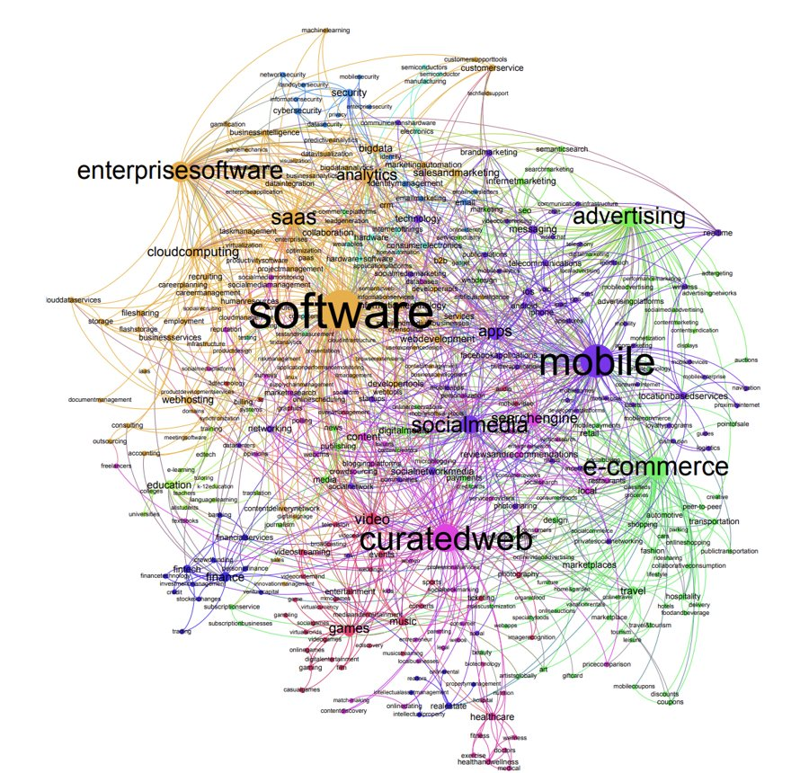

Research
Networks of people,
companies and papers.
From my PhD at Queen Mary University of London onwards.
 Predicting success in the worldwide start-up networkCiotti, Bonaventura (equal contribution) and others
Predicting success in the worldwide start-up networkCiotti, Bonaventura (equal contribution) and others
Positive and negative connections and homophily in complex networksCiotti Homophily and missing links in citation networksCiotti, Bonaventura, Nicosia, Panzarasa, Latora
Homophily and missing links in citation networksCiotti, Bonaventura, Nicosia, Panzarasa, Latora Degree correlations in signed social networksCiotti, Bianconi, Capocci, Colaiori, Panzarasa
Degree correlations in signed social networksCiotti, Bianconi, Capocci, Colaiori, Panzarasa